criamos diversos trabalhos, projetos e atividades nesse primeiro semestre. Utilizamos
linguagens como: Html, Css, Javascrypt e Java.
Meus Trabalhos
Jogo Puc Adventure
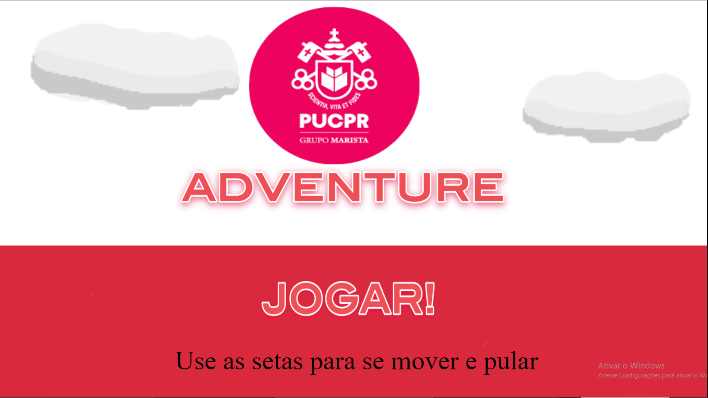 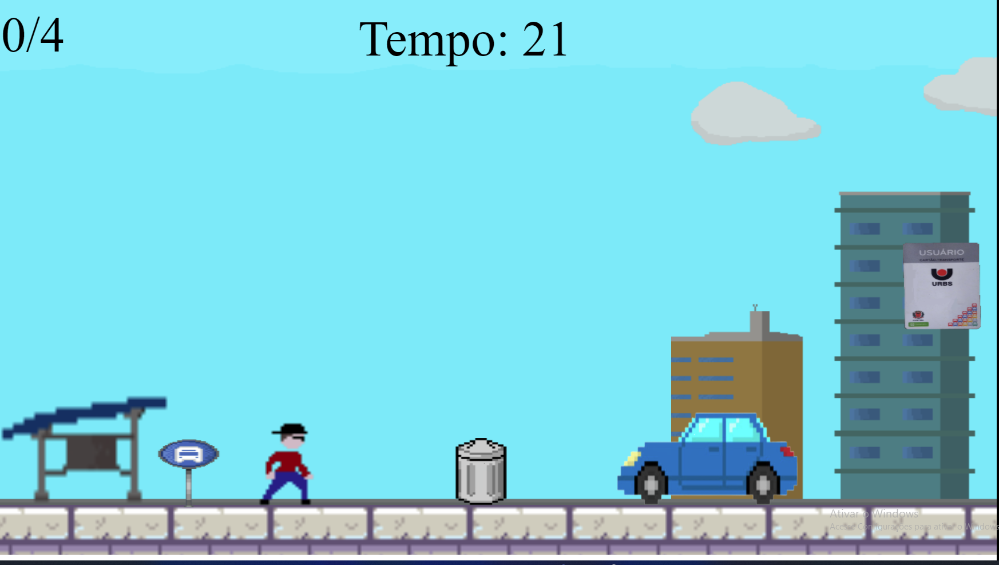 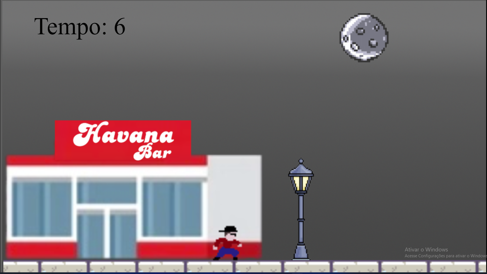
Esse foi o primeiro projeto em que fizemos em grupo. Nós criamos um jogo
usando a plataforma
Construct 3 nomeado de Puc Adventure. Em nosso jogo, o personagem é
um aluno que precisa
chegar na aula a tempo e coletar os itens necessários.
Aqui está o relatório do nosso jogo com informações mais detalhadas sobre a história, gameplay e mecânica do jogo.
Personagem em Ação
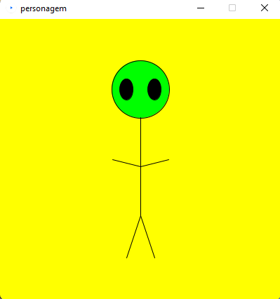 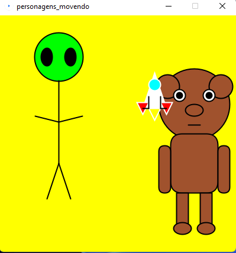
Nesta atividade "Personagem em Ação" eu criei um personagem usando o Processing e
após isso nosso grupo juntou os personagens
e colocamos eles em movimento.
Aqui está o código que é responsável por movimentar os personagens.
Aplicativo Multimidia Meme Sounds
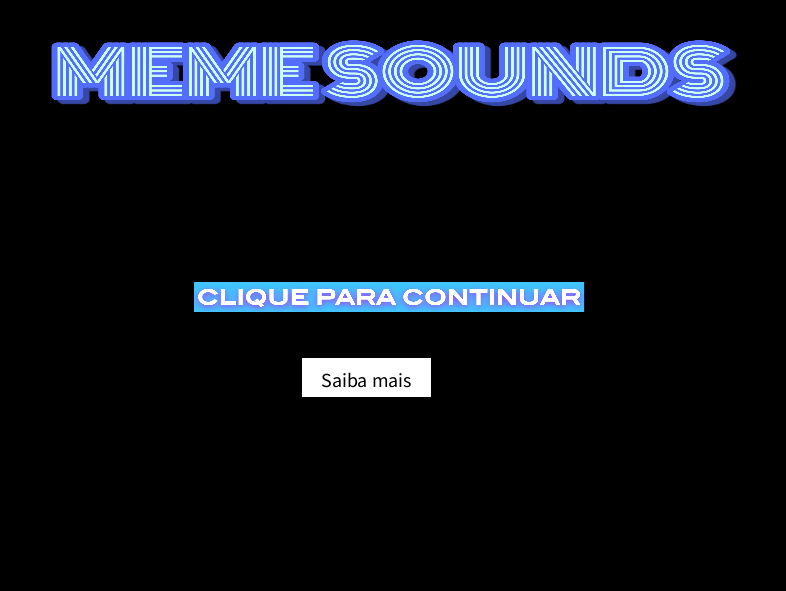 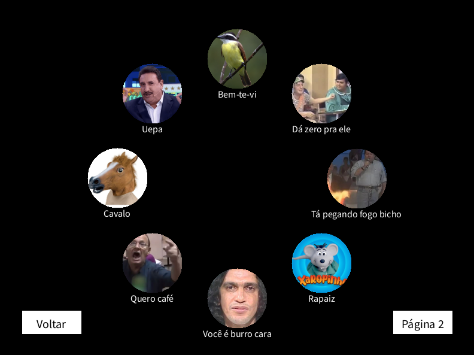
Esse é um aplicativo multimidia nomeado "Meme Sounds" no qual eu e meu grupo desenvolvemos usando o Processing.
Em nosso aplicativo,
há uma seleção de memes engraçados que ao clicar em cima o som é reproduzido.
Existem duas páginas de memes e um menu.
Atividade - Site de Curitiba
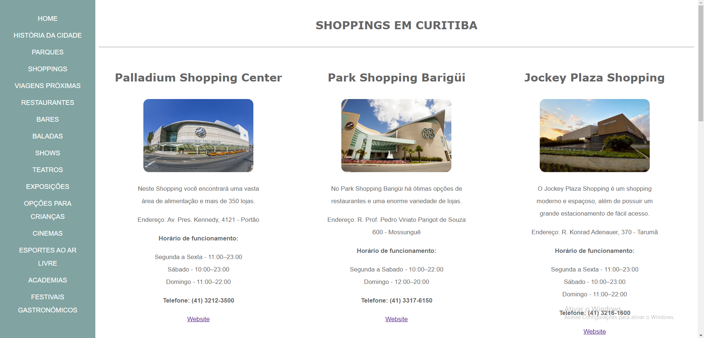 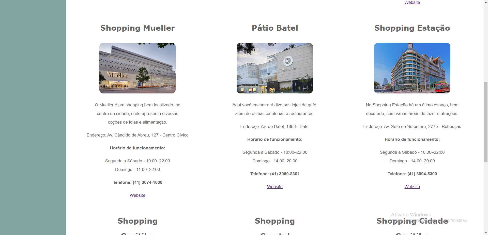
Essa foi uma atividade em que criamos uma página em html e css que mostra os principais shoppings da cidade.
No final todos os grupos juntaram as páginas para criar um site completo.
Site Campo Magro
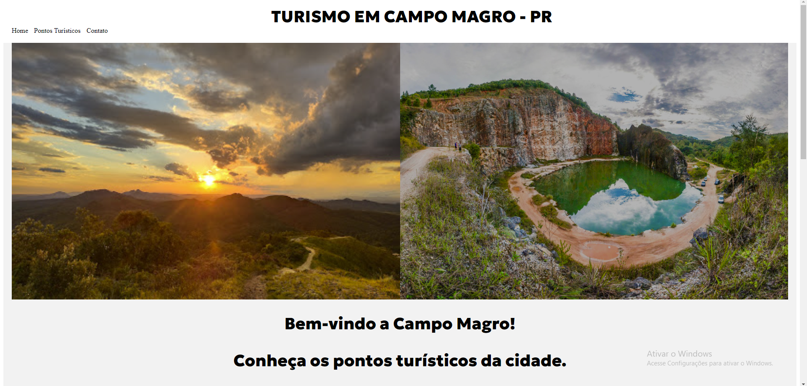
Neste projeto desenvolvemos um site para a cidade de Campo Magro - PR, no qual colocamos informações
sobre os principais pontos turísticos visando melhorar a questão do turismo na cidade.
Atividade Formulário
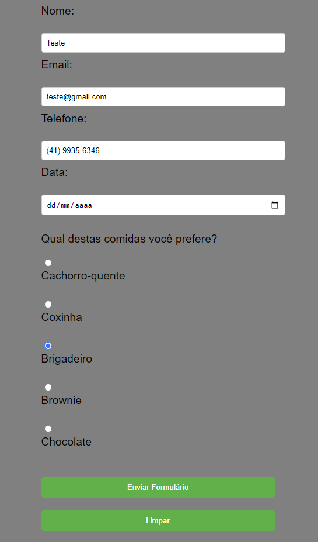
Na atividade do formulário criamos durante a aula um formulário simples. Nele o usuário pode preencher
com
seus dados e e-mail. Ao enviar o formulário chegará um e-mail com o que foi completado.